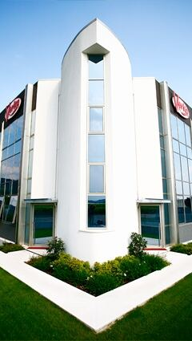
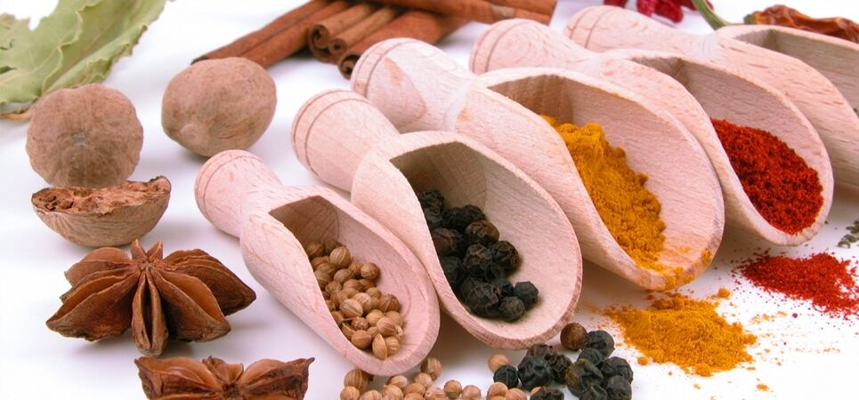
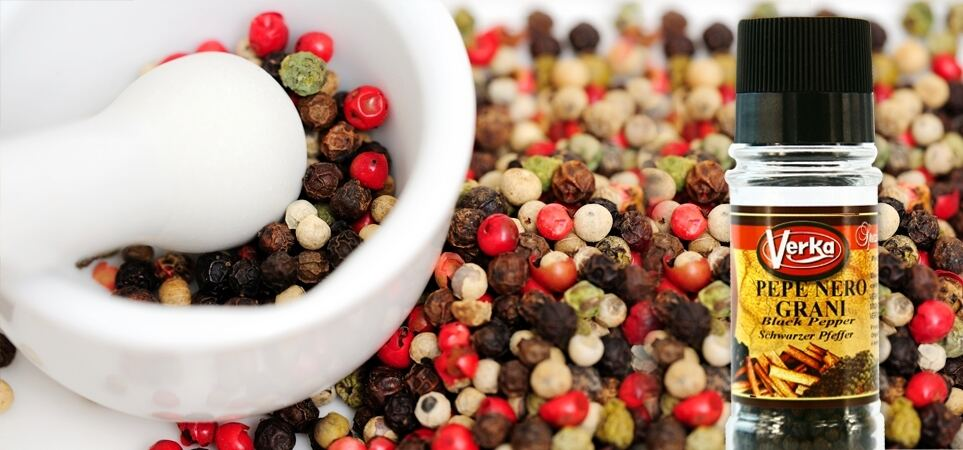
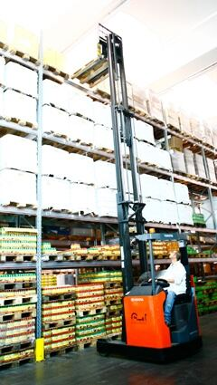
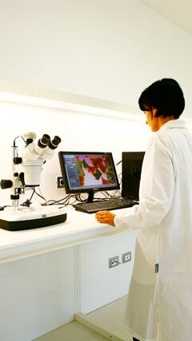
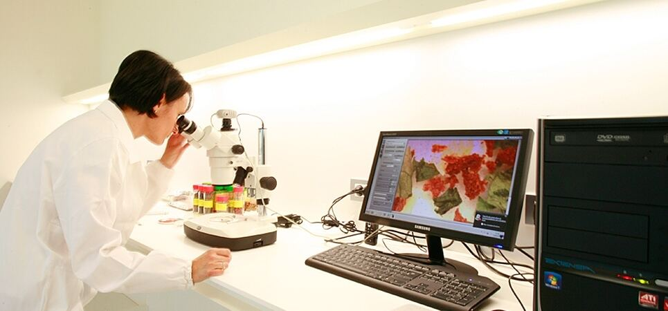

01 · StoriaLa nostra storia
Una storia di famiglia e di territorio, cresciuta insieme ai clienti che ogni giorno scelgono i nostri sapori.
Spezie ed erbe, insaporitori, zafferano, sali e preparati per brodo: Verka seleziona, lavora e confeziona sapori per l'industria alimentare e la grande distribuzione.




Dalla sede di Arbizzano di Negrar, alle porte di Verona, Verka unisce esperienza artigianale e processi industriali per offrire prodotti costanti, sicuri e ricchi di gusto.

01 · StoriaUna storia di famiglia e di territorio, cresciuta insieme ai clienti che ogni giorno scelgono i nostri sapori.

02 · ServiziMiscele su misura, private label e confezionamento.
Materie prime selezionate e rispetto per la tradizione.

04 · PersoneUn team che segue ogni fase: dalla selezione delle materie prime al controllo del prodotto finito.
Dal vasetto in vetro alla busta, dal sale con macina al dado biologico: una gamma completa per la cucina di tutti i giorni.
Clicca su una lineaScorri e tocca una linea per sfogliare le schede prodotto.
Laboratorio interno, selezione delle materie prime e certificazioni di settore garantiscono sicurezza alimentare e qualità costante.

La sede, il laboratorio, le linee di produzione e i nostri prodotti in tavola.
38 risposte su azienda, servizi, qualità e prodotti.
Verka produce e confeziona spezie, erbe aromatiche, insaporitori, zafferano, sali, condimenti e preparati per brodo, con il proprio marchio e per conto di terzi. Ha sede ad Arbizzano di Negrar, in provincia di Verona.
Verka nasce negli anni '50 a Verona, nella Zona Industriale Storica: «Dal 1957 in cucina con voi». Nasce come azienda artigianale specializzata nei preparati per brodo, dal dado classico ai granulari, allora innovativi, destinati soprattutto a ospedali e comunità del Veneto.
Agli inizi degli anni '60 Verka è stata acquisita dalla famiglia Desideri. Dal 1980 l'azienda è guidata da Giulio Desideri, che ha consolidato la produzione dei brodi granulari e dato un forte impulso al settore delle spezie.
I prodotti Verka sono presenti su tutto il territorio nazionale ed europeo, sia con il marchio Verka sia con marchi privati di primaria importanza.
Verka basa la sua filosofia sul rispetto dell'ambiente e sul lavoro di squadra. Le persone sono la risorsa centrale: l'azienda punta sulla loro crescita professionale, promuove la diversità come valore e riconosce capacità individuali e autonomia.
Ad Arbizzano di Negrar (VR), in Via Archimede 18, nel cuore della Valpolicella. Il «Quartiere Verka» si estende su oltre 10.000 m² all'interno di un unico lotto di proprietà.
In tre strutture indipendenti: una con 5 linee di confezionamento per flaconi in vetro e PET e un reparto per miscele e macinazione delle spezie; una con 3 mulini per la polverizzazione e 3 linee per bustine (singole, doppie, tris e da quattro); la Divisione Brodo e Condimenti con miscelatori da 50 a 1000 kg, 2 linee per flaconi da 150 g a 1000 g e 2 linee per buste da 10 g a 1000 g.
Verka è lieta di invitare i propri partner a vedere quanto realizzato in oltre 60 anni di storia. Contattaci per concordare una visita.
Sì. Verka offre produzione e confezionamento a marchio personalizzato per la GDO: per tutti i prodotti a catalogo è possibile avere etichette originali o con l'immagine scelta dalla catena di distribuzione.
Sì. Il nostro studio creativo realizza packaging ex novo con brand personalizzato: un servizio conto terzi «chiavi in mano» a 360° per i supermercati clienti.
Sì, Verka produce e confeziona anche per conto di terzi, con lavorazione di erbe aromatiche, macinazione e miscelazione delle spezie e preparazione di brodi e condimenti.
La ricerca e la creazione di nuove ricette e miscele fanno parte della storia di Verka, e lo stabilimento dispone di una cucina sperimentale dedicata alla ricerca e sviluppo. Contattaci per valutare il tuo progetto.
Contatta senza impegno i nostri uffici: chiama il +39 045 67 03 485, scrivi a info@verka.it oppure compila il modulo in fondo alla pagina indicando prodotti, formati e quantità di tuo interesse.
Quantità minime e condizioni di fornitura dipendono dal prodotto, dal formato e dal tipo di servizio (marchio Verka o private label). Contatta i nostri uffici per un'offerta su misura.
Il Sistema Qualità è certificato ISO 9001:2015, IFS Food Higher Level e BRC Grade AA. Verka ha inoltre le certificazioni di prodotto per la commercializzazione e l'importazione di prodotti biologici e per lo zafferano.
Sì: lo zafferano ha una certificazione di prodotto per il controllo e la classificazione dello zafferano (Crocus sativus L.) in conformità alla norma ISO 3632, con requisiti aziendali aggiuntivi.
Verka dispone di un piano HACCP aggiornato e conforme alle norme vigenti. Tutti i prodotti sono controllati sotto l'aspetto organolettico, chimico-fisico e biologico.
Le materie prime sono scelte con rigore tra le più idonee, e i fornitori vengono selezionati attraverso criteri prestabiliti e con la massima attenzione.
Sì. Il nuovo stabilimento è dotato di un laboratorio di analisi e di una cucina sperimentale per la ricerca e sviluppo e per eseguire product-test e panel-test.
Sono test sensoriali a cui vengono sottoposti i prodotti per studiarne la qualità e la capacità di soddisfare le richieste e le aspettative dei consumatori.
Produzione e confezionamento avvengono in locali separati, distribuiti in tre strutture indipendenti e serviti da magazzini dedicati, proprio per ridurre i rischi di cross contamination.
Sì: insieme alla scelta delle materie prime e ai servizi di Controllo e Assicurazione Qualità, l'istruzione del personale è uno degli impegni dichiarati da Verka.
Nella sezione Qualità di questa pagina trovi le certificazioni. Per ricevere copie aggiornate o documentazione per i tuoi capitolati, scrivi a info@verka.it.
Otto linee: Spezie ed Erbe, Zafferano, Insaporitori, Sali con tappo macina, Condimenti per pasta, Preparati per brodo, Dadi tradizionali e biologici, Sali dal Mondo. A queste si aggiungono zuppe pronte, contorni e condimenti.
Una linea completa di spezie ed erbe in flaconi di vetro (ad esempio pepe nero in polvere e origano in foglie), la Linea Catering in vasi in PET (ad esempio pepe nero macinato e prezzemolo), le linee in vasi e in buste e la linea biologica.
Sì: la Linea Spezie ed Erbe Biologiche «Un pizzico di…» in flaconi di vetro, con ad esempio curcuma in polvere, pepe nero in grani e peperoncino in polvere, e il preparato per brodo vegetale biologico «Antichi Sapori».
«Fior di Zafferano» Verka, in confezione da 0,3 g con 3 bustine da 0,1 g, disponibile anche in espositore da banco. Lo zafferano è certificato secondo la norma ISO 3632.
I sali con tappo macina in flacone di vetro: sale affumicato al faggio, sale rosa dell'Himalaya, sale rosso delle Hawaii e sale blu di Persia, oltre a una linea di sali aromatizzati.
La linea con tappo spargitore comprende VerkArrosto (preparato per arrosti), l'insaporitore per barbecue, l'insaporitore per pesce e l'insaporitore per patate.
I preparati granulari nei gusti Classico e Vegetale, nella Linea Classica da 250 g, 500 g e 1 kg e nella linea con tappo spargitore da 150 g; i dadi in confezione da 20 (sapore classico e sapore vegetale) e il vegetale biologico «Antichi Sapori».
«I Condimenti all'Italiana» in confezione da 50 g, come Spaghettata Italiana e Aglio, Olio e Peperoncino, e le specialità della linea Lago di Garda.
Sì: la Linea Zuppe Pronte «Sapori della Tradizione» (ad esempio Zuppa Ortolana e Zuppa di Farro) e la Linea Contorni e Condimenti, con il preparato per pearà e il preparato per bruschetta.
Sì: la Linea Catering in vasi in PET e i formati più grandi, come i brodi granulari da 1 kg e flaconi e buste fino a 1000 g. Contattaci per i formati più adatti alla tua attività.
Nella sezione Prodotti di questa pagina: clicca su una linea per sfogliarne le schede. Per schede tecniche dettagliate scrivi a info@verka.it.
Sì, ci piace suggerire come usare i nostri prodotti, ad esempio con il risotto allo zafferano, piatto tipico della tradizione lombarda, che si sposa bene con funghi porcini, salsiccia o frutti di mare.
Flaconi in vetro e PET da 150 g a 1000 g, buste da 10 g a 1000 g, bustine monodose singole, doppie, tris e da quattro, oltre a vasi per il catering e confezioni con tappo macina o tappo spargitore.
I prodotti Verka sono distribuiti nella grande distribuzione con il marchio Verka e con marchi privati. Per forniture o per sapere dove trovarli, contatta i nostri uffici.
Telefono +39 045 67 03 485, fax +39 045 67 54 450, email info@verka.it, oppure tramite il modulo in fondo a questa pagina. La sede è in Via Archimede 18, 37024 Arbizzano di Negrar (VR).
Nessuna domanda trovata. Chiedicelo direttamente →
Per informazioni su prodotti, forniture e private label scrivici o chiamaci: ti risponderemo al più presto.
La mappa è fornita da Google Maps, che imposta cookie di terze parti.
Cookie policyCompila il modulo, ti ricontattiamo noi.
Usiamo solo strumenti tecnici necessari al funzionamento del sito. Con il tuo consenso carichiamo anche contenuti di terze parti (la mappa di Google Maps), che possono impostare cookie propri. Puoi cambiare idea in qualsiasi momento dal link «Preferenze cookie» in fondo alla pagina. Cookie policy